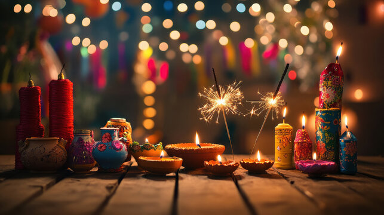
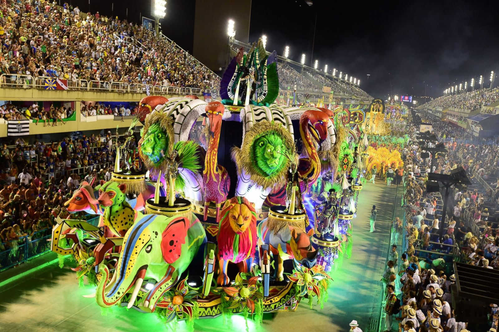
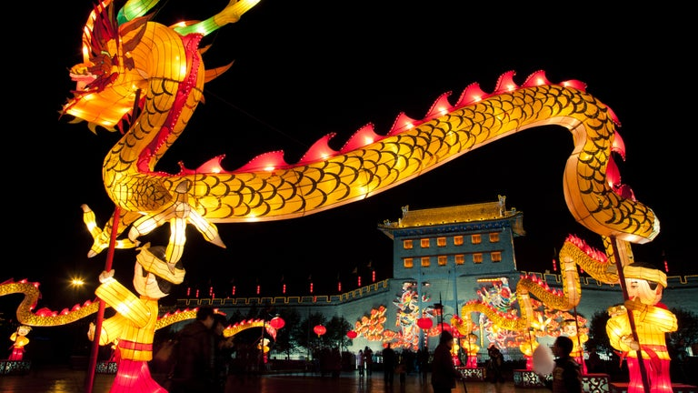
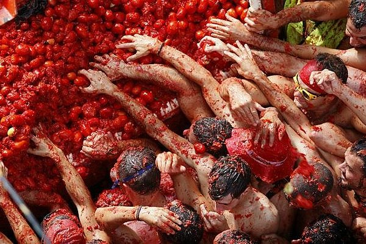
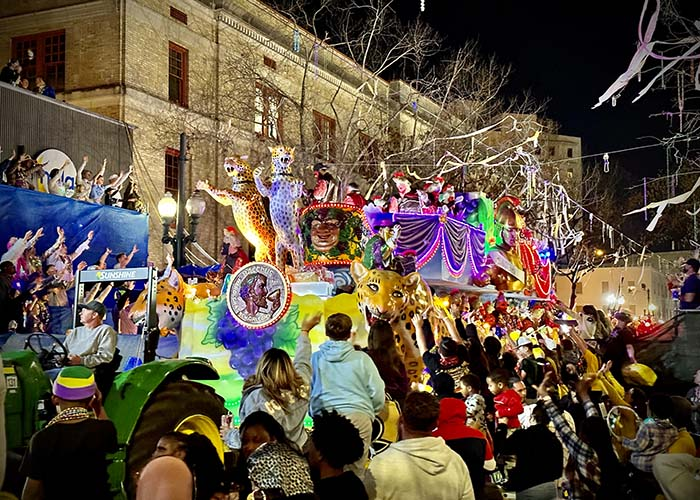
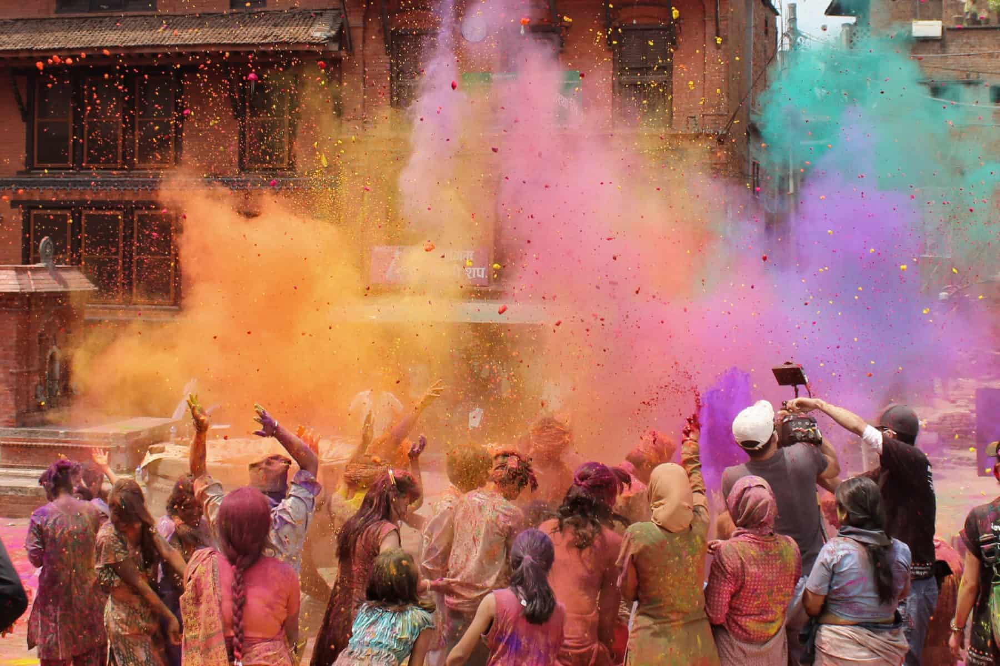
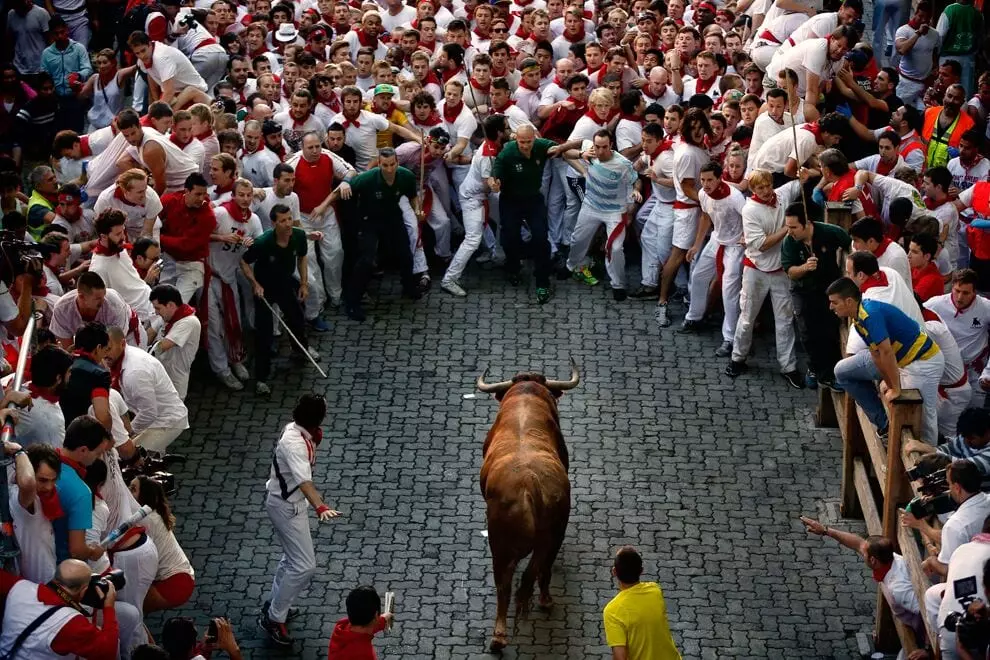

Immerse yourself in vibrant cultural celebrations!
Diwali(India)
Diwali, the Festival of Lights, is celebrated across India and in many other countries with significant Indian communities. This Hindu festival marks the victory of light over darkness and good over evil. People decorate their homes with oil lamps, burst fireworks, and share sweets with family and friends. The festival has a spiritual significance but also fosters a sense of togetherness and joy among communities.
Carnival (Rio de Janeiro, Brazil)
The Carnival in Rio de Janeiro is one of the most iconic and vibrant festivals in the world. Held annually before Lent, this festival features extravagant parades, samba dancers, colorful costumes, and street parties. It draws millions of visitors who come to experience the electric atmosphere, the rhythmic music, and the unique blend of culture and tradition that defines Brazil’s carnival.
Oktoberfest (Munich, Germany)

Held every year in Munich, Germany, Oktoberfest is the world’s largest beer festival. It celebrates Bavarian culture, with millions of people gathering to enjoy traditional music, food, and, of course, beer. The festival features grand parades, carnival rides, and plenty of local food like pretzels, sausages, and roasted chicken, creating a fun-filled atmosphere for visitors from around the globe.
Chinese New Year (China)
Chinese New Year, also known as the Spring Festival, is the most significant holiday in China, marking the start of the lunar new year. Celebrations include dragon dances, firecrackers, family reunions, and feasts. The streets are filled with vibrant decorations, and the festival's rich traditions symbolize new beginnings, prosperity, and the drive for family unity.
La Tomatina (Buñol, Spain)
La Tomatina is a quirky and messy festival held in the Spanish town of Buñol every August. Thousands of participants throw overripe tomatoes at each other in the streets, creating a massive food fight. The festival, which has its origins in a local dispute, has grown into an international event, attracting tourists who come to experience the fun and chaotic atmosphere
Mardi Gras (New Orleans, USA)
Mardi Gras in New Orleans is a lively and extravagant celebration of the last day of feasting before Lent. Known for its colorful parades, bead-throwing, masquerade balls, and street parties, Mardi Gras is a unique fusion of French, African, and Spanish cultures. The festival is marked by revelry, elaborate costumes, and a sense of fun and freedom.
Holi (India)
Holi is the Hindu Festival of Colors, celebrated across India and other countries with Hindu populations. It marks the arrival of spring and the triumph of good over evil. Participants throw vibrant colored powders at each other, dance to festive music, and enjoy special foods. The event is a symbol of unity, love, and the joyous spirit of life.
Sapporo Snow Festival (Sapporo, Japan)

The Sapporo Snow Festival, held every February in Sapporo, Japan, is a magical winter event known for its stunning ice and snow sculptures. The festival features enormous snow sculptures, ice slides, and artistic ice displays, attracting visitors from around the world. The festival's icy beauty is complemented by winter sports events and performances, creating a spectacular winter wonderland for all who attend.
The Running of the Bulls (Pamplona, Spain)
The Running of the Bulls, part of the San Fermin festival, is a daring and thrilling event held every July in Pamplona, Spain. Brave participants run in front of a group of bulls through narrow streets, leading to the bullring where the bulls are later fought. The festival is a unique blend of adrenaline, tradition, and celebration, with thousands of spectators and revelers joining in the festivities
Edinburgh Festival Fringe (Edinburgh, Scotland)

The Edinburgh Festival Fringe is the world's largest arts festival, taking place every August in Scotland's capital. It showcases thousands of performances from artists around the globe, including theater, comedy, dance, and music. The festival transforms the city into a vibrant, creative hub, with performances taking place in venues across the city, from traditional theaters to unconventional spaces like bars and street corners.